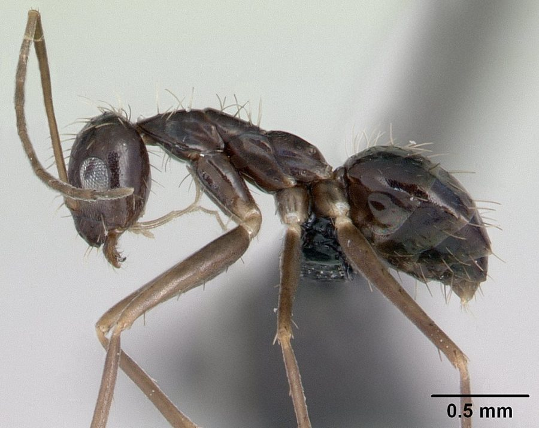

ब्लैक क्रेज़ी चींटीBlack Crazy Ant
Paratrechina longicornis · Formicidae · INS-0174

- Scientific name वैज्ञानिक नाम
- Paratrechina longicornis (Latreille, 1802)
- Family कुल
- Formicidae
- Hindi हिंदी
- ब्लैक क्रेज़ी चींटी
- Local names स्थानीय नाम
- black crazy ant, ant
- Status here यहाँ की स्थिति
- native
- Movement आवागमन
- Resident, here all year
- Known from कहाँ दर्ज
- Others have published records from the wider Awadh–Purvanchal plain, none yet from Basti–Ayodhya अवध–पूर्वांचल से दूसरों के प्रकाशित अभिलेख, बस्ती–अयोध्या से अभी नहीं
- IUCN IUCN
- not evaluated
- Review समीक्षा
- audited and independently read
When to look कब देखें
Present all year. साल भर मौजूद।
ब्लैक क्रेज़ी चींटी / Black Crazy Ant
Paratrechina longicornis (Latreille, 1802) — Formicidae
ब्लैक क्रेज़ी चींटी — बहुत छोटी काली चींटी जो पागलों जैसे दौड़ती है। घरों में, बगीचों में, खेतों में सब जगह मिलती है। इसके पंख नहीं होते, पर बहुत सारी मादाएँ हो सकती हैं, इसलिए कॉलोनियाँ बहुत बड़ी हो जाती हैं। दुनिया भर में फैली हुई है। खाना चोरी करती है, घरों में परेशानी करती है।
Quick Identification त्वरित पहचान
| Feature | Description |
|---|---|
| Size | Worker 2–3 mm; queen 4–5 mm |
| Colour | Black or dark brown |
| Antennae | Long, slender; as long as or longer than body |
| Eyes | Medium-sized; dark |
| Behaviour | Erratic, rapid movement; does not follow trails like other ants |
| Nests | Multiple nests (polydomous); hundreds of queens |
| Trails | Does not form organized foraging trails |
Field tip: Watch the ant traffic around buildings, gardens, and food sources. The workers move erratically and chaotically, sometimes backing up or changing direction suddenly — hence "crazy". The long antennae are distinctive. Unlike most ants, no organized trails connect nests to food sources. Very common in homes and gardens.
हिंदी — कैसे पहचानें: छोटी काली चींटी, पागलों जैसी दौड़ती है। लंबी सींगें। घर के खाने के पास बहुत होती है। सड़ी-गली चीजें खाती है।
Morphology आकारिकी
Biometrics:
| Measurement | Range |
|---|---|
| Worker body length | 2.0–3.0 mm |
| Queen body length | 4–5 mm |
| Antenna length | 2.5–3.5 mm (worker) |
Worker: Monomorphic (all workers are similar size). Body is black or very dark brown. Head is small and rounded. Antennae are long and slender, composed of 12 segments, and inserted low on the head. Eyes are small to medium, dark. Legs are slender and relatively long. No ocelli (simple eyes). The body is smooth and glossy.
Queen: Larger than workers (4–5 mm). The species is notable for having many queens per colony (polygynous) and even wingless queens that look almost like workers. This queen polymorphism contributes to the species' success.
Male: Winged, but produced in small numbers and short-lived.
Behaviour & Ecology व्यवहार और पारिस्थितिकी
A highly invasive, nomadic ant species found worldwide in tropical, subtropical, and warm temperate regions. The species is characterized by rapid colony growth, multiple nests (polydomous), and hundreds of queens per colony. Unlike most ant species, workers do not follow organized pheromone trails; instead, they forage individually and erratically, giving the colony its "crazy" behaviour. This unpredictability makes them effective foragers in cluttered, human-disturbed environments.
The species nests in soil, under stones, in leaf litter, and in buildings. A single colony can span a large area with multiple sub-nests and thousands of workers. Queens are parthenogenetic (reproduce without males) in many populations, allowing rapid colony growth. The species is omnivorous, feeding on seeds, insects, honeydew, and human food scraps.
Invasive in many parts of the world, the species has displaced native ants and become a major household and agricultural pest. In Africa and Asia, it has spread via human trade and is now one of the world's most invasive ant species.
हिंदी: रानियाँ सैकड़ों होती हैं, इसलिए कॉलोनी बहुत बड़ी होती है। घर-बार में घुस जाती है। सब कुछ खा जाती है।
Life Cycle / Phenology जीवन चक्र
| Stage | Duration |
|---|---|
| Egg | 6–7 days |
| Larva | 20–25 days |
| Pupa | 9–14 days |
| Worker lifespan | 2–3 months |
| Queen lifespan | 1–2 years |
| Egg-to-worker | 35–45 days under warm conditions |
Temperature dependence: Development is fast at 24–27°C. At cooler temperatures, development slows. In tropical regions, multiple generations occur per year.
Reproduction: Many queens per colony lay eggs continuously. Some populations have completely parthenogenetic (asexual) reproduction, while others produce males for intercolony mating.
Host Plants or Prey आहार
Food sources:
- Seeds and plant matter
- Dead insects
- Honeydew from plant-feeding insects
- Human food: sugary foods, fats, proteins
- Carrion
Feeding: Workers are omnivorous and opportunistic. They forage individually or in small groups, not in organized columns. They carry food back to the nest to feed larvae and other workers. The species is particularly attracted to sweet substances and protein-rich foods.
Predators / Natural Enemies शत्रु
- Parasitoid flies: Some phorid flies parasitise ants, including this species
- Larger ants: Competing ant species may attack foraging workers
- Ant-eating insects: Antlions and other insects may trap workers
- Vertebrate predators: Birds and small mammals eat ants, though this species is small
Agricultural / Human Relevance कृषि प्रासंगिकता
Household and agricultural pest. The Black Crazy Ant is a major pest in homes, schools, hospitals, and food-storage facilities. In homes, the ants invade kitchens and pantries, contaminating food and stealing edibles. They can establish large nests indoors, particularly in walls and under floorboards. In agriculture, the species tends to plant-feeding insects (mealybugs, scale insects), protecting them from predators in exchange for honeydew, and this mutualistic relationship can increase pest populations. The ants also attack other beneficial insects, including honey bees.
In islands and tropical regions, the species has become invasive and has displaced native ants, disrupting ecosystem functioning. The ants are difficult to control because of their many nests and multiple queens; standard pesticide application often fails to eradicate the colony.
Management: Control requires:
- Baiting: using bait stations with toxicant food sources that workers carry back to nests
- Eliminating food sources: keeping kitchens clean and storing food in sealed containers
- Removing nesting sites: clearing debris, firewood piles, and unnecessary outdoor clutter
- Sealing entry points to buildings
हिंदी: घर में घुस जाती है, खाना खराब करती है। खेत में दूसरी कीटों को बचाती है, जिससे नुकसान बढ़ता है। सफ़ाई और साफ़-सुथरे डिब्बों से रोक सकते हो।
Expected Locally स्थानीय रूप से अपेक्षित
Not a field record. Written from published accounts for eastern Uttar Pradesh. No confirmed local sighting yet — if you have seen it, that is what the atlas needs.
अभी तक स्थानीय पुष्टि नहीं। यह विवरण प्रकाशित स्रोतों से है, किसी अवलोकन से नहीं।
Expected in gardens, residential areas, and buildings throughout Basti district and eastern UP. The presence of erratically moving black ants around food sources or in kitchens indicates an infestation. A specimen collected from a building or garden with date and location would confirm a local record.
Distribution वितरण
Global range: Originally from tropical Asia; now cosmopolitan in tropical, subtropical, and warm temperate regions. The species is one of the world's most invasive ants.
In India: Present in all states; very common in urban areas, gardens, and agricultural regions.
In Uttar Pradesh: Present in all cities and towns; expected in all warm regions.
In Basti district / eastern UP: Expected in all urban and residential areas, particularly in buildings and gardens.
Research Questions शोध प्रश्न
- Does the presence of this ant species correlate with reduced abundance of native ant species in a region? / इस चींटी के आने से स्थानीय चींटियों की संख्या में क्या बदलाव होता है? — Compare ant communities in areas with and without the species.
- What bait types (sugar-based, protein-based, or combination) are most effective in controlling this species? — Test different bait formulations; measure worker recruitment and nest elimination.
- Can removal of invasive plants that produce honeydew-producing insects reduce this ant species' abundance? — Modify vegetation in selected areas; monitor ant populations.
- How many satellite nests does a single colony typically have, and how far do they extend? — Map nests using fluorescent markers or genetic analysis; quantify spatial distribution.
- What is the rate of colony growth (queens and workers) when food is unlimited versus limited? — Maintain colonies with different resource levels; record population growth.
Similar Species मिलती-जुलती प्रजातियाँ
| Species | How to tell apart | हिंदी |
|---|---|---|
| Anoplolepis gracilipes (Yellow Crazy Ant) | Yellowish or pale brown (not black), also erratic behaviour but larger | पीले रंग की पागल चींटी |
| Other small black ants (Pheidole, Monomorium) | Different antennae proportions, more organized foraging trails, smaller size | छोटी, सीधी लाइन में चलती है |
| Sugar ant (Camponotus fulvopilosus) | Larger (3.5–4 mm), different behaviour, darker reddish tint | बड़ी, भूरी चींटी |
Field rule: Tiny black ant (2–3 mm) with long antennae and erratic, unpredictable movement, foraging singly or in small disorganized groups: Black Crazy Ant.
Taxonomy & Classification वर्गीकरण
Original description. Described by Latreille in 1802 as Formica longicornis based on specimens from Saint-Domingue (Haiti). The genus Paratrechina was established later. The species epithet longicornis refers to the long antennae.
Subspecies. Monotypic; no subspecies are formally recognised, though genetic work suggests that invasive populations may differ from native populations.
Family and order placement. Order Hymenoptera, family Formicidae (ants). Paratrechina is a genus of tropical and subtropical ants; P. longicornis is the most widespread and invasive member.
Phylogenetic notes. Recent molecular work indicates that P. longicornis may have originated in Southeast Asia or Melanesia. The species' invasive success is attributed to its parthenogenetic reproduction, multiple queens, and generalist ecology.
IUCN status rationale. Not evaluated. A highly invasive species listed among the world's worst invasive organisms but not under any formal conservation consideration.
Photo Gallery फोटो गैलरी
Photos needed आवश्यक फोटो
- [ ] Worker foraging or moving erratically (चींटी दौड़ती)
- [ ] Colony nest entrance (घोंसला)
- [ ] Workers clustered on food source (खाने पर चींटियाँ)
No photos yet — add field photos to media/species/black_crazy_ant/ and run node scripts/sync_photos.js.
References संदर्भ
- Latreille, P.A. (1802). Histoire Naturelle des Fourmis. Imprimerie Crapelet, Paris. [original description]
- Wetterer, J.K. & Wetterer, A.L. (2006). Long-distance range expansion in Paratrechina longicornis (Hymenoptera: Formicidae). Sociobiology 48: 763–771.
- Holway, D.A., Lach, L., Suarez, A.V., Tsutsui, N.D. & Case, T.J. (2002). The causes and consequences of ant invasions. Annual Review of Ecology, Evolution, and Systematics 33: 181–233.
- Sharma, A. & Meena, P. (2015). Distribution and management of invasive ants in India. Entomon 40(2): 144–155.
- Wetterer, J.K. (2010). Worldwide spread of the African big-headed ant, Pheidole megacephala. Journal of Hymenoptera Research 34: 35–46.
- GBIF Occurrence Data — Paratrechina longicornis, Asia (2024).
Source file: species/fauna/insects/black_crazy_ant.md